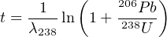
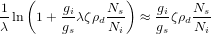
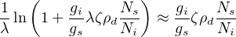

Chapter 12
Programming practicals
In this Chapter you will process some real geochronological datasets using
either R or Matlab. These are both mathematical scripting languages that
are both powerful and easy to use.
R is a free and open programming language that works on any operating
system, including Windows, OS-X and Unix/Linux. It can be downloaded
and installed from http://r-project.org.
Matlab is a proprietary programming environment. The full version of
this software is very expensive but a reasonably complete student version
can be purchased for £55 + VAT from http://mathworks.com.
Alternatively, Octave is an open source clone of Matlab that can be
downloaded for free from http://www.gnu.org/software/octave.
Sections 12.1 and 12.2 will present two brief tutorials of R and Matlab,
respectively. These will cover most commands that you will need for the
subsequent computer practicals.
12.1 Introduction to R
A number of different graphical user interfaces (GUIs) are available to
interact with R. The most popular of these are Rgui, RStudio, RCommander
and Tinn-R.
- Starting these applications or running R in a text terminal
presents the user with a command line prompt. Anything that is
typed after the > symbol will be evaluated immediately. Thus, we
can use R as a calculator:
> 1 + 1
> sqrt(2)
> exp(log(10))
> 31 %% 14
- Alternatively, code can also be saved as text (using a built-in text
editor) and saved as mycode.R, say. This code can then be copied and
pasted at the command line prompt. Or it can be called from the
command line using the source() function:
> source('mycode.R')
- In the remainder of this tutorial, we will assume that your code is run
from a text file unless explicitly stated otherwise. The # symbol
marks the beginning of a comment. R ignores anything that follows
it:
# The arrow symbol is used to assign a value to a
# variable. Note that the arrow can point both ways:
foo <- 2
4 -> bar
print(foo*bar)
# Defining a vector of multiple values:
myvec <- c(0,1,2,3,4,5)
# or, equivalently:
myvec <- seq(0,5)
# or
myvec <- seq(from=0,to=5,by=1)
# or
myvec <- 0:5
# Turn myvec into a 2x3 matrix:
mymat <- matrix(myvec,nrow=2)
# Accessing one or more elements from a vector or matrix:
x <- myvec[3]
y <- myvec[1:3]
z <- mymat[1,2:3]
# Change the third value in the second row of mymat to 10:
mymat[2,3] <- 10
# Change the entire second column of mymat to -1:
mymat[,2] <- -1
# Transpose of a matrix:
flipped <- t(mymat)
# Element-wise multiplication (*)
# vs. matrix multiplication (%*%):
rectangle <- mymat * mymat
square <- mymat %*% flipped
- If you want to learn more about a function, type help() or ? at the
command line prompt:
> help(c)
> ?matrix
- In addition to R’s built-in functions, you can also define your
own:
cube <- function(n){
return(n^3)
}
# Using this function to take the cube of 3:
c3 <- cube(3)
# Conditional statement:
toss <- function(){
if (runif(1)>0.5){ # runif(n) draws n random
print("head") # numbers between 0 and 1
} else {
print("tail")
}
}
# Use a for loop to toss 10 virtual coins:
for (i in 1:10) {
toss()
}
- The purpose of the practical exercises in Sections 12.3-12.6 is to
process datasets contained in external data files. For this you will need
to be able to navigate through your file system and load the necessary
files:
> ls() # list all the variables
> rm(list=ls()) # clear the current workspace
> getwd() # get the current working directory
> setwd("path_to_a_valid_directory")
- Use the above commands to navigate to the directory containing the
file named RbSr.csv. Then read this file into memory:
RbSr <- read.csv("RbSr.csv",header=TRUE)
Type names(RbSr) or colnames(RbSr) at the command prompt to
list the variable names (column headers) contained in this
dataset.
- Let us now perform an isochron regression (Section 4.2) through these
Rb-Sr data:
# Plot Sr87Sr86 against Rb87Sr86:
plot(RbSr[,'Rb87Sr86'],RbSr[,'Sr87Sr86'],type="p")
# fit a linear model to the data
fit <- lm(Sr87Sr86 ~ Rb87Sr86, data = RbSr)
- fit is a ‘list’ object. Type str(fit) at the command prompt to see
its structure. One of its items is fit$coefficients, which
contains the slope and the intercept of the linear fit. Alternatively,
we can also access these values using the coef() function.
The following code uses this function to calculate the isochron
age:
# define the 87Rb decay constant (in Ma-1):
lam87 <- 1.42e-5
# compute the age from the slope:
age <- log(1 + coef(fit)[2])/lam87
# predict the Sr87Sr86-ratios for the
# full range of Rb87Sr86-values:
Rb87Sr86 <- c(0,max(RbSr[,'Rb87Sr86']))
Sr87Sr86 <- coef(fit)[1] + coef(fit)[2]*Rb87Sr86
# add the predicted ratios to the existing plot:
lines(Rb87Sr86,Sr87Sr86)
# label with the isochron age:
title(age)
- One of the most powerful features of R is the availability of
thousands of ‘packages’ providing additional functionality to the
built-in functions. For example, let us download and install the
IsoplotR package from the ‘Comprehensive R Archive Network’
(CRAN):
> install.packages('IsoplotR')
- We can use IsoplotR to redo the isochron regression exercise using a
more rigorous weighted regression algorithm that takes into
account the analytical uncertainties in both the 87Sr/86Sr- and
87Rb/86Sr-ratios:
# load the functionality of the IsoplotR package:
library('IsoplotR')
# load the data (see ?read.data for details):
RbSr2 <- read.data('RbSr.csv',method='Rb-Sr',format=1)
# compute and plot the isochron diagram:
isochron(RbSr2)
12.2 Introduction to Matlab
- Matlab, like R, allows the user to run code either directly at the
command line prompt, or from a built-in text editor. Anything
following a percent symbol (%) is a comment and is ignored. It
is considered good practice to document your code with lots of
comments, as will be done in this tutorial.
% Ending a line with a semi-colon
% suppresses output to the console:
'be loud'
'stay quiet';
% Matlab can be used as a fancy calculator:
1 + 1
sqrt(2)
exp(log(10))
% Intermediate values can be stored in variables:
foo = 2;
bar = 4;
foo = foo*bar;
foo
- As the name suggest, Matlab (which stands for MATrix LABoratory) is
capable of, and excels at, dealing with collections of multiple numbers
arranged in vectors and matrices:
% Data can be entered as vectors:
x = [0 2 4 6 8 10]
% or using shorthand syntax:
y = 0:2:10
% Define a matrix
z = [1 2 3
4 5 6
7 8 9];
% Accessing one or more elements
% from a matrix or vector:
x(3)
y(1:3)
z(1:2,2:3)
% Attention: '*', '/' and '^' symbols
% are reserved for matrix operations:
a = [1 1 1] % row vector
b = [1;1;1] % column vector
a*b
% Use '.*', './' and '.^' for
% element-wise operations:
a.*a
% Transpose of a matrix:
z'
- In addition to Matlab’s built-in operators and functions, you can also
define your own:
% take the cube of the input argument:
function out = cube(in)
out = in^3;
end
Copy the cube function into a text file named cube.m and save it in
the current directory. You can then load the contents of the file by
simply typing its name without the .m extension:
c3 = cube(3)
- A useful feature of Matlab that is missing from most other
programming languages is the ability to accommodate several output
parameters:
function [m,s] = basicStats(dat)
m = mean(dat); % mean
s = std(dat); % standard deviation
end
% create a row vector of 10 random numbers
randnum = rand(1,10);
% use our new function
[m,s] = basicStats(randnum)
An extensive library of documentation is built into Matlab.
For example, to access further information about the rand
function, simply type help rand or doc rand at the command
prompt.
- Matlab is a fully fledged programming language, which has flow
structures such as if statements and for loops:
% Conditional statement:
function coinToss
% 'rand()' produces numbers between 0 and 1
if (rand() > 0.5)
% display a message to the console
disp('head')
else
disp('tail')
end
end
% Use this function in a for loop:
for i=1:10,
coinToss
end
- File and variable management:
% List all the variables in the current workspace:
who
whos
% Remove some or all variables from the workspace:
clear m,s
who
clear all
who
% Basic file management is done with UNIX commands:
pwd % pass the working directory
cd .. % move up one directory
ls % list all files in the current directory
Use the above commands to navigate to the directory containing the
RbSr.csv file.
% To view the contents of this file:
type('RbSr.csv')
% Incidentally, the 'type' function can also
% be used to view the code of Matlab functions:
type('mean')
- Let us now apply our knowledge of Matlab to a geochronological
problem:
% Read the Rb-Sr dataset ignoring the header:
RbSr = csvread('RbSr.csv',1,0);
% Plot the Sr87Sr86-ratio (first column)
% against the Rb87Sr86-ratio (third column):
Rb87Sr86 = RbSr(:,1);
Sr87Sr86 = RbSr(:,3);
plot(Rb87Sr86,Sr87Sr86,'ok')
xlabel('87Rb/86Sr')
ylabel('87Sr/86Sr')
- This should yield a linear array of Rb-Sr data. Let us now fit an
isochron through these data. Matlab includes several functions to
perform linear regression, including regress and fitlm. We will use
the polyfit function:
% Fit a first order polynomial through the data:
[fit,S] = polyfit(Rb87Sr86,Sr87Sr86,1);
% (S will be used in a later practical)
% define the 87Rb decay constant (in Ma-1):
lam87 = 1.42e-5;
% compute the age from the slope:
age = log(1 + fit(1))/lam87;
% predict the Sr87Sr86-ratio for the
% full range of Rb87Sr86-values:
x = [0,max(Rb87Sr86)];
y = fit(2) + fit(1)*x;
# add the prediction and age to the existing plot:
hold on;
plot(x,y,'-r')
title(age)
12.3 U-Th-Pb data reduction
You are supplied with two data files that were produced by the quadrupole
laser ablation ICP-MS system at UCL’s London Geochronology Centre. At
the time of the analysis, this instrument could not resolve 204Pb from the
isobaric interference at 204Hg. Therefore, it is not possible to apply a
common lead correction as explained in Section 5. However, this does not
cause any major issues to us because:
- The mineral analysed is zircon, which incorporates very little
common Pb in its crystal structure during crystallisation.
- The ages are sufficiently old for the radiogenic Pb to dominate
the common Pb component by orders of magnitude.
In this exercise, we will use standard-sample bracketing (Section 3.3) to
process some raw mass spectrometer data in R or Matlab:
- Load the input files 91500.csv (sample) and GJ1.csv (standard)
into memory.
- Plot the 238U signal against time. The resulting curve consists
of three segments: (i) the first 20 seconds record the background
(‘blank’) signal of the ICP-MS, measured while the laser was
switched off; (ii) 20 seconds into the run, the laser is turned
on and the ions arrive in the ICP-MS; (iii) After the signal has
ramped up quickly, it slowly drops over time as the laser goes out
of focus whilst drilling deeper into the sample. This is the ‘signal’.
- Given that GJ-1 has a known age of 600.4 Ma, what are its
expected 206Pb/238U and 207Pb/235U ratios?
- Compare these values with the arithmetic mean of the measured
ratios, ignoring the first 25 seconds of the ICP-MS signal. Is there
a significant difference between the measured and the expected
ratios? What could be causing this?
- Calculate a correction factor by dividing the expected GJ-1 ratios
by the measured values.
- Calculate the measured isotopic ratios for sample 91500.
- Apply the correction factor calculated in step 5 to these
measurements.
- What is the age of 91500?
- Can you plot the results on a Wetherill concordia diagram?
12.4 40Ar/39Ar data reduction
In this exercise, we will reduce some synthetic 40Ar/39Ar data. You are
provided with three input files:
- smpl.csv: 36Ar, 39Ar and 40Ar as a function of time (t) for the
sample.
- stnd.csv: the same data for the standard, which is a Fish Canyon
sanidine with a conventional K-Ar age of 27.8 Ma.
- blnk.csv: a ‘blank’ run, i.e. a measurement of the background
levels of Argon present in the mass spectrometer in the absence
of a sample.
To perform the data reduction, please follow the following steps:
- Load the three input files.
- Plot the 40Ar signal of the sample against time. Do the same for
the 36Ar signal in the blank. What is the difference?
- Perform a linear regression of the 36Ar, 39Ar and 40Ar signals
through time and determine the intercept at t=0.
- Subtract the ‘time zero’ intercepts of the blank from those of the
sample and standard.
- Apply an atmospheric correction assuming that all 36Ar has an
atmospheric origin.
- Calculate the J-value of the standard.
- Calculate the age of the sample.
12.5 Error propagation
This exercise will build on the results from the previous two practicals.
- Plot the 206Pb/238U-ratios of the sample against those of the
standard (data from Section 12.3). Verify that the covariance
between the two can safely be neglected.
- Calculate the standard errors of the mean 206Pb/238U signal
ratios for the sample (91500) and the standard (GJ-1) using the
mean and sd (for R) or std (for Matlab) functions.
- Propagate the analytical uncertainties of the U-Pb age, ignoring
the covariance terms. Recall that

If you want you can use the simplifying approximation that
ln(1+X) ≈ X if X ≪ 1 (this assumption may not be correct for
the 207Pb/235U-age).
- Compute the analytical uncertainties associated with the linear
extrapolation of the argon signals of the sample and the standard
in Section 12.4. If you use R, the covariance matrix of the
slope and intercept can be simply obtained from the vcov(fit)
function, where fit is the output of the lm function (see item 8 of
Section 12.1). The corresponding standard errors are then found
by taking the square root of the diagonal elements of this matrix.
For Matlab, all the relevant information is provided in the output
of the polyfit function:
help(polyfit)
...
[P,S] = POLYFIT(X,Y,N) returns the polynomial
coefficients P and a structure S for use with
POLYVAL to obtain error estimates for predictions.
S contains fields for the triangular factor (R)
from a QR decomposition of the Vandermonde matrix
of X, the degrees of freedom (df), and the norm
of the residuals (normr). If the data Y are
random, an estimate of the covariance matrix
of P is (Rinv*Rinv')*normr^2/df, where Rinv
is the inverse of R.
Based on these instructions, I have written the following function to
calculate the standard errors of the fitting parameters from the second
output parameter of the polyfit function:
function se = S2se(S)
covmat = (inv(S.R)*inv(S.R'))*S.normr^2/S.df;
se = sqrt(diag(covmat));
end
- Use these error estimates to propagate the analytical uncertainty of
the J-value and the sample age. Again you can use the linear
approximation to the age equation mentioned in point 3.
12.6 Fission tracks
In this exercise, you will use your programming skills to calculate some
fission track ages. You are given the following datasets:
- DUR.csv: a table with two columns listing the number of
spontaneous tracks Ns and induced tracks Ni counted in 25
grains of an apatite age standard (t = 31.4 Ma) from Durango,
Mexico. Note that these pairs of tracks were counted over the
same area, so that ρs∕ρi = Ns∕Ni in Equation 7.9.
- MD.csv: a similar table for an apatite sample from Mount
Dromedary, Australia.
You will need to:
- Rewrite Equation 7.9 in terms of the ζ calibration factor and
use this new formula to calculate the ζ factor for each single
grain analysis of the Durango age standard. Use a dosimeter track
density of ρD = 300,000 cm-2.
- Use the mean of these ζ factors to calculate the age of the Mount
Dromedary sample (i.e., the single grain ages and their mean).
- Propagate the analytical uncertainties for each of those single
grain ages, using the fact that fission track counts (N, say) follow
a Poisson distribution for which it is true that:

To simplify the calculations, you can also use the following
approximation:

- How does the single grain age precision of the fission track method
compare to the U-Pb and 40Ar/39Ar age uncertainties in Sections
12.3 and 12.4? Also compare with the standard deviation and
standard error of the mean age of Mount Dromedary apatite.